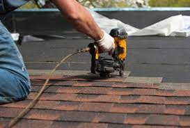

About Roofing
About
We are a team of roofing and gutter repair specialists and We service roofs of all types and no job is too big or too small. Our commitment to your satisfaction is what drives us.
Roof Installation
 No matter what shape your roof is in, we can still replace the roof. We will evaluate your roof, give you a free estimate, and provide the best roofing solution for your needs. we’ll provide a thorough estimate detailing what repairs may be needed.
Roof Maintenance
After installing the new roof we recommend a proper maintenance every 2 or 3 years. Within this maintenance we would look for missing shingles, damaged drip edge, missing fasteners, broken gutters, plies of granules, and missing flashing. we also do proper insulation and vetilation in attics, which keeps your roof in good condition.